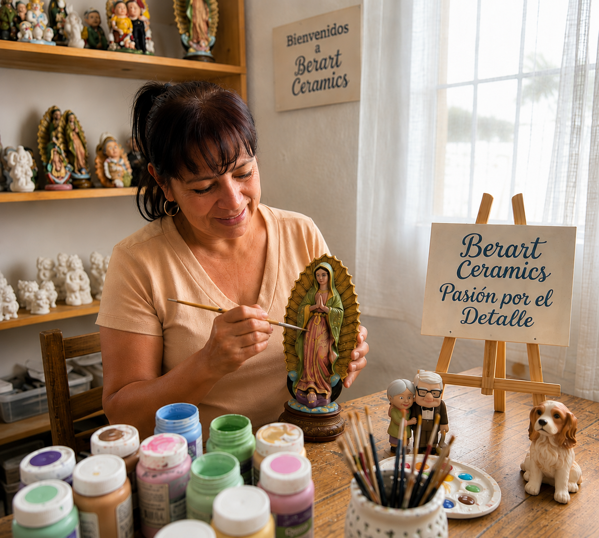

Arte, fe y tradición convertidos en piezas únicas para tu hogar y tus espacios especiales.
Descubrir Colección
En Bertart Ceramics cada pieza nace del amor por el arte, la fe y el trabajo artesanal.
Elaboramos artículos decorativos y religiosos con dedicación, buscando transmitir belleza, inspiración y significado.
Imágenes, figuras y artículos para espacios de fe.
Piezas elaboradas cuidadosamente con acabados únicos.
Detalles con significado para momentos importantes.